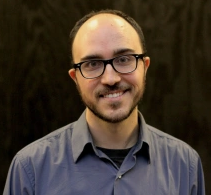

Full Stack (HTML/CSS/Rails/PHP) Web Developer

Vince Facts:
- Vince Milosevich has been a computer afficanado since he got his first (terrible, but loved) Packard Bell Computer in the 90's.
- He finally turned pro after getting a web development certificate at Santa Fe Community College and landing an internship in 2020.
- Ruby is his favorite language, though he does speak some conversational Spanish.
- When not programming, Vince enjoys Magic: The Gathering, Chess, and Texas Hold 'Em.
- Vince invented a board game called Caledea: The Epic Strategy Game.
- Special shout out to MM&L!
0
1
2
3
4
5
6
7
Strength
Speed
Agility
Stamina
Durability
Intelligence
Power Ratings